Create a section view using associative planes
Create a section view of the assembly shown. Do not cut the handle, nut, shaft, and ball valve.
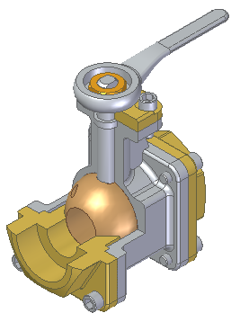
-
Choose the PMI tab→Model Views group→Section by Plane command
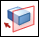
.The command defaults to the non-associative cut plane creation method.
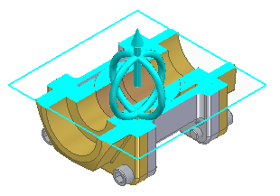
-
On the command bar, click the Select Parts Step . On the Cut List, click Cut only unselected parts. Select the parts shown then click Accept.
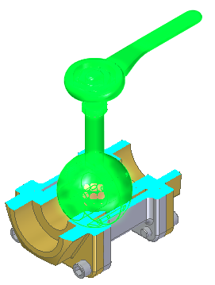
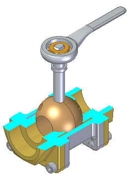
-
Click the Cutting Plane Step , and then click the Associative Plane button .
Note:The command bar changes to display the plane type creation list.
-
On the command bar, click Parallel Plane on the Plane Type list. Select the plane shown.
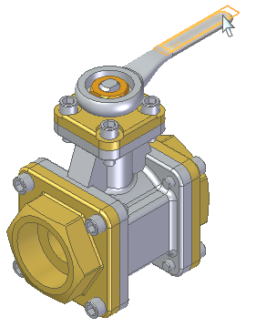
-
Position the cut plane at the center point shown. Click when the keypoint displays.
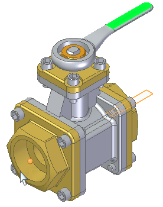
Click Accept.
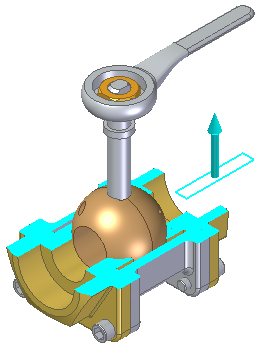
-
Create another parallel cut plane. On the command bar, click the Cutting Plane Step and then click the Add Cutting Plane button .
-
Select the plane shown.
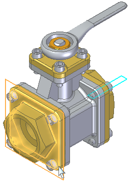
-
Position the plane at the top flange edge midpoint shown and then click.
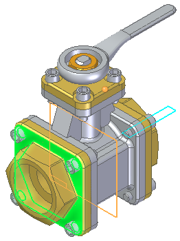
Click Accept.
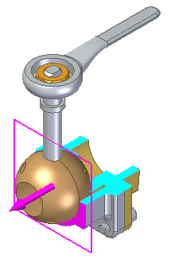
Click Finish.
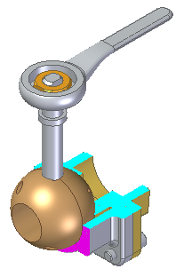
-
Change section view to a bounded display. On the command bar, click the Bounded button
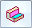
then click Accept.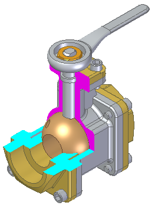
Click Finish.
How do I
Create a 3D section view (synchronous environment)Create a 3D section view (ordered environment)
Edit a 3D section view
Apply or remove a section cut
Expose a 3D section in a drawing
Create a section view using non-associative planes
Learn more
3D section views of modelsLook up more details
3D section view editing commandsProperties command (3D section views)
Section Display Options command (3D section views)
Section Display Options dialog box
Section Options dialog box (3D sections)
Section command bar (synchronous environment)
Section command bar (ordered environment)
Edit Profile command (3D section views)
Section command (Part, Sheet Metal, and Assembly)
Section by Plane command
Section by Plane command bar
Section by Plane Options dialog box